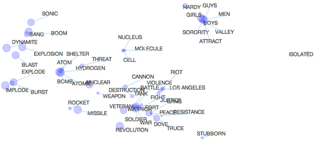

Multiple Maps t-SNE


The visualization tool on this page allows you to navigate maps that were produced using multiple maps t-SNE (see below). Such maps provide a way to visualize data of which the underlying similarities are non-metric, such as semantic similarities.
Multiple maps t-SNE is introduced in the following paper:
-
• L.J.P. van der Maaten and G.E. Hinton. Visualizing Non-Metric Similarities in Multiple Maps. Machine Learning 87(1):33-55, 2012. [ PDF ]
Navigating in the tool works as follows:
-
• Clicking on the bottom-left squares changes the map that is shown.
-
• Clicking on a word in the visualization lights up the bottom-left squares to indicate in which map the selected word occurs.
-
• Typing a word in the search box has the same effect.
-
• Clicking on the Show all maps button shows all the maps that have the selected word in it.
-
• Zooming and panning the maps works as expected.
Go to the visualization of word associations (simple)!
Go to the visualization of word associations (complex)!
Go to the visualization of NIPS authors (simple)!
Go to the visualization of NIPS authors (complex)!
Matlab code to reproduce the results of the experiments in the paper is available for download here.